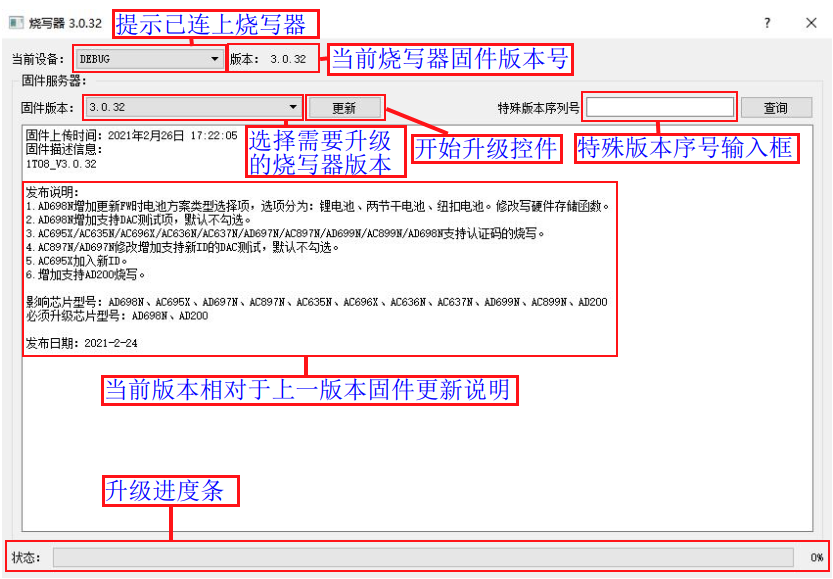
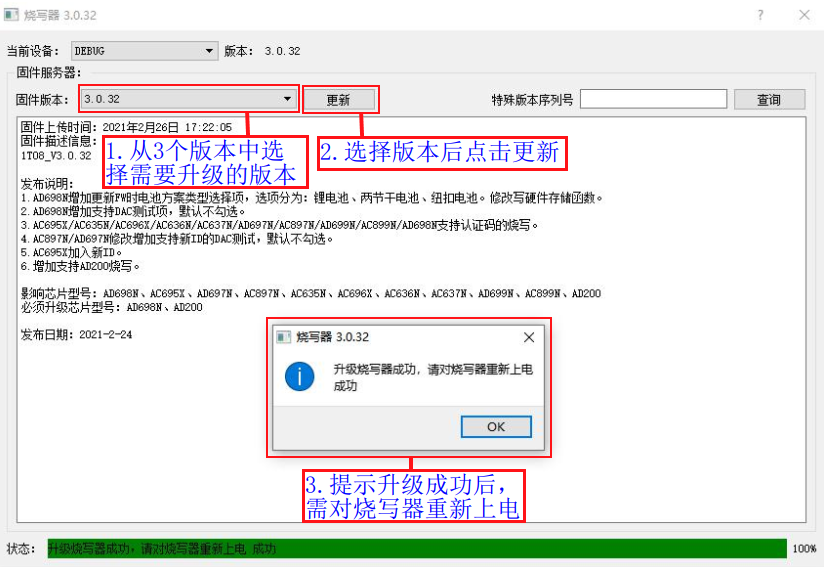
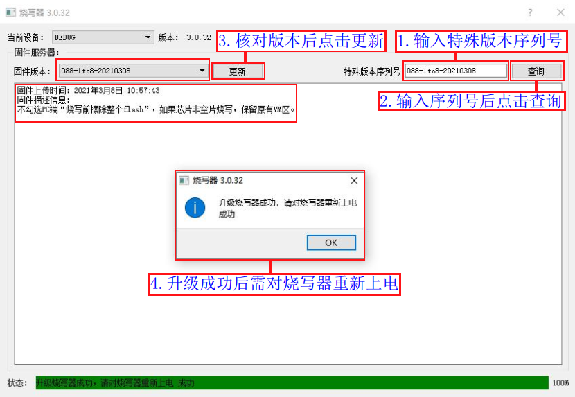
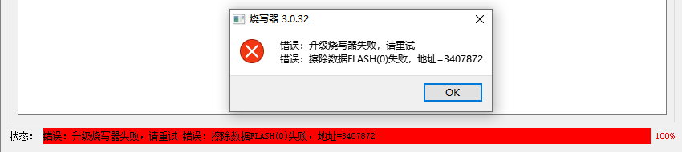
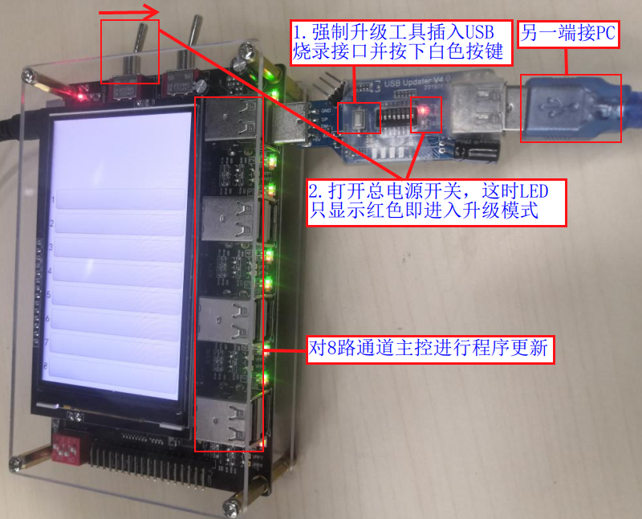
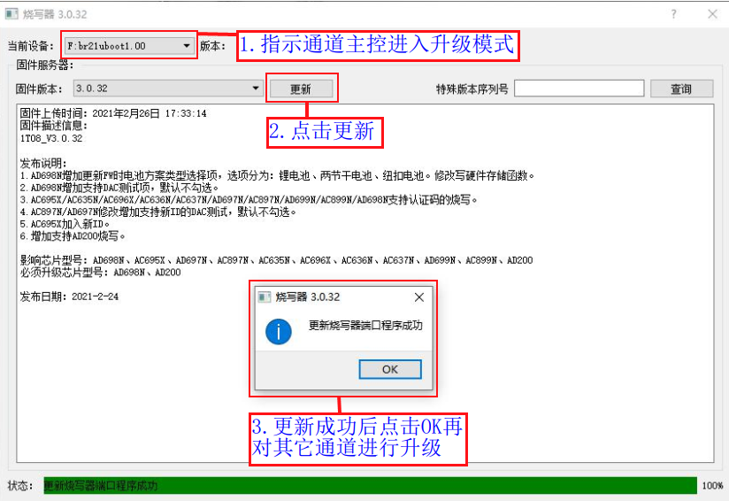
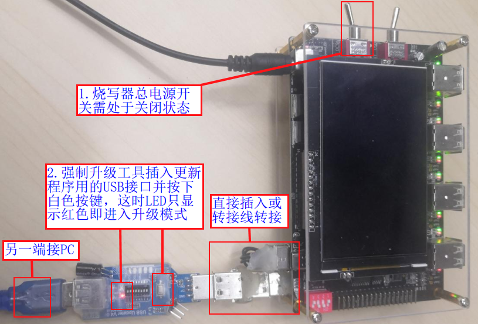

2.4. 远程升级烧录器固件
2.4.1. 升级说明
一拖八烧录器固件是指控制整个烧录器工作的主控芯片（总主控芯片和8通道主控芯片）固件程序。
升级工具可选择最新的3个正式版本固件进行升级，同时支持升级根据实际应用和客户需要制作的特殊版本烧录器固件。
烧录器固件会根据实际情况不定时进行优化升级，进行增加功能、性能优化、问题修复等。正常情况下务必及时升级到最新版本，否则可能出现一些烧录问题。
2.4.2. 正式版本固件升级
进入远程升级界面

PC端控制界面

远程升级控制界面
如远程升级操作说明所示，
【1】从3个烧录器固件版本选择要升级的版本，
【2】点击“更新”；
【3】升级成功后，需对烧录器重新上电（拔出烧录器端的USB数据线，并拨动“控制总电源的钮子开关”，往左拨关电源，再右拨开电源）；
【4】重新上电后烧录器无目标芯片要烧录的程序，参考《更新目标芯片程序到烧录器》部署sdk编译生成的.fw、.ufw或.key文件到烧录器后即可执行样机芯片程序烧录；如果升级失败可根据报错提示信息查找原因重新升级。

远程升级操作说明
远程升级烧录器固件成功后重新上电开机界面如远程升级后开机界面所示，这时可参考《更新目标芯片程序到烧录器》小节内容更新目标芯片程序到烧录器。

远程升级后开机界面
2.4.3. 特殊版本固件升级
请参照《正式版本固件升级》小节，打开远程升级控制界面。
如远程升级特殊版本操作说明所示，
【1】输入要升级的特殊版本序列号；
【2】点击查询；
【3】点击“更新”；
【4】升级成功后，需对烧录器重新上电（拔出烧录器端的USB数据线，并拨动“控制总电源的钮子开关”，往左拨关电源，再右拨开电源）；
【5】重新上电后烧录器无目标芯片要烧录的程序，参考《更新目标芯片程序到烧录器》部署sdk编译生成的.fw、.ufw或.key文件到烧录器后即可执行样机芯片程序烧录；如果升级失败可根据报错提示信息查找原因重新升级。

远程升级特殊版本操作说明
2.4.4. 升级异常处理
升级过程出现USB松动等原因导致升级失败，出现如远程升级失败报错所示等各类升级失败报错，请对烧录器重新上电再插入USB线，重新走正常的升级流程；

远程升级失败报错
如果反复重启烧录器后升级固件都出现失败，可尝试对8个烧录通道的主控芯片进行程序更新：
【1】拷贝
burner.exe可执行文件放到PC某个磁盘（参考《打开PC端控制界面》步骤获取burner.exe文件，如打不开烧录器“CD驱动器”则可通过其他烧录器或向杰理公司获取）；【2】双击拷贝出来的
burner.exe,点击“设备”->“远程升级”打开远程升级控制界面；【3】强制升级工具插入烧录器USB烧录接口并连接到PC，并使升级工具进入升级模式，如对8通道主控进行程序更新所示；
【4】远程升级控制界面检测到强制升级工具插入后，点击“更新”，如远程更新通道主控程序所示；更新完所有烧录通道后，对烧录器重新上电开机后再走正常的远程升级烧录器固件流程。
Note
仅需要拷贝
burner.exe可执行文件
对8通道主控进行程序更新

远程更新通道主控程序
如果更新完8个通道的主控芯片程序后，依然不能开机，或者上电出现屏黑屏，使用USB线进行烧录器与PC端连接后打不开“CD驱动器”等情况，可尝试对烧录器总主控芯片进行程序更新：
【1】拷贝一份
burner.exe可执行文件放到PC某个磁盘（参考《打开PC端控制界面》步骤获取burner.exe文件，如打不开烧录器“CD驱动器”则可通过其他烧录器或向杰理公司获取）；【2】双击
burner.exe,点击“设备”->“远程升级”打开远程升级控制界面；【3】强制升级工具插入“更新程序用的USB接口”并连接到PC，并使升级工具进入升级模式，如对总主控进行程序更新所示；
【4】远程升级控制界面检测到强制升级工具插入后，点击“更新”，如远程更新总主控程序所示；
Note
仅需要拷贝一份
burner.exe可执行文件
对总主控进行程序更新

远程更新总主控程序
如果进行了前面三种异常情况的处理，都无法对烧录器固件进行远程升级，这时请及时联系杰理技术支持，以便对烧录器进行维修或更换。